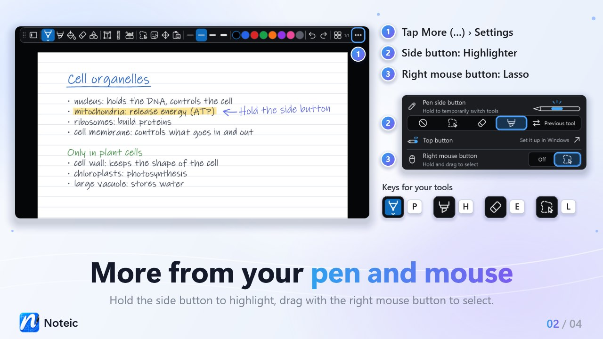
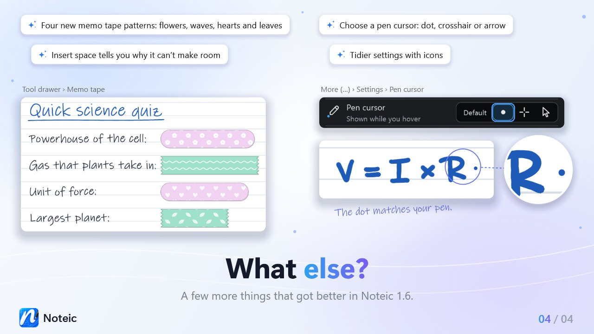

Pen and mouse buttons New in 1.6
Switch tools without reaching for the toolbar: with the side button of your pen, the right mouse button or a key. You set the buttons and the pen cursor under … › Settings › Pen & ink.

Pen side button#
Hold the side button of your pen to use another tool. Let go and your tool is back. Choose what the button does:
| Off | Nothing special in Noteic. This is the default. |
|---|---|
| Lasso | Hold the button and circle what you want to select. The selection bar appears. If nothing was caught, your previous tool is back. |
| Eraser | Hold the button to erase, let go to write again. |
| Highlighter | Hold the button to highlight, with the color and width of your highlighter. |
| Previous tool | Hold the button to use the tool you had before the current one: another pen, the highlighter, the eraser, the lasso, shapes or memo tape. Text boxes and Pan don't count. If you have not changed tools yet, your current tool stays. |
In Settings, the first four show only an icon. Rest the pointer on one to see its name. Lines you draw along the ruler or the protractor always use your current pen.
Top button and eraser end#
The top button of your pen is set up in Windows. In Settings, tap Top button. It opens Windows Settings › Bluetooth & devices › Pen & Windows Ink.
The eraser end of your pen erases in every tool except Pan. See Eraser.
Right mouse button#
- Open … › Settings.
- Under Pen & ink, set Right mouse button to the lasso icon. Off is the default.
- Hold the right mouse button and drag around what you want to select.
The selection bar appears, as with the lasso. If nothing was caught, your previous tool is back. A click without dragging works as before, and with the Pan tool the right button does not select.
This also helps with pen tablets that send their pen button as a right click.
Keys for your tools#
| P | The pen you used last |
|---|---|
| H | Highlighter |
| E | Eraser, without opening its menu |
| L | Selection, in the shape its button shows: lasso or rectangle, on a whiteboard also Insert space |
Press the key alone, without Ctrl, Shift or Alt. Keys do nothing while you type in a text box or a search field, and a tool set to Off in Customize the toolbar is not picked. All other keys are in Keyboard shortcuts.
Pen cursor#
Choose what you see where your pen hovers, under … › Settings › Pen cursor:
| Default | The pointer Windows shows. |
|---|---|
| Dot | A dot in your pen's color and size that follows the zoom. The eraser shows its size as a ring. |
| Crosshair | A thin cross marks the pen tip. |
| Arrow | The usual pointer, also for the pen. |
Your choice applies to pens, highlighter, shapes and the eraser, with pen and mouse. Selection, text boxes, Pan and memo tape keep their own pointers.
